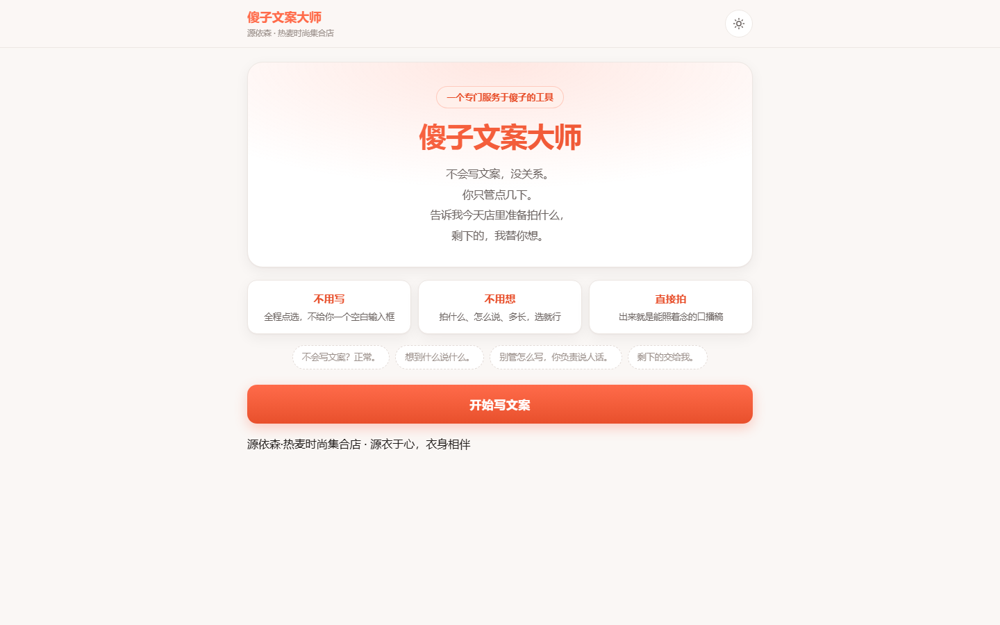
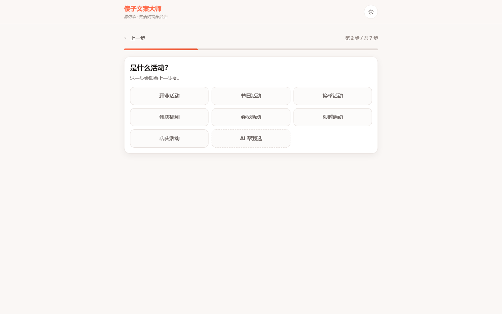
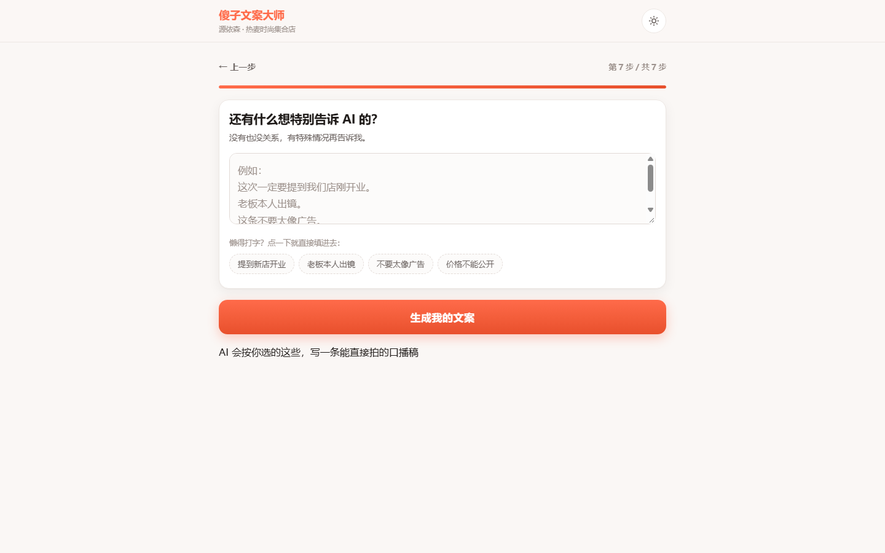
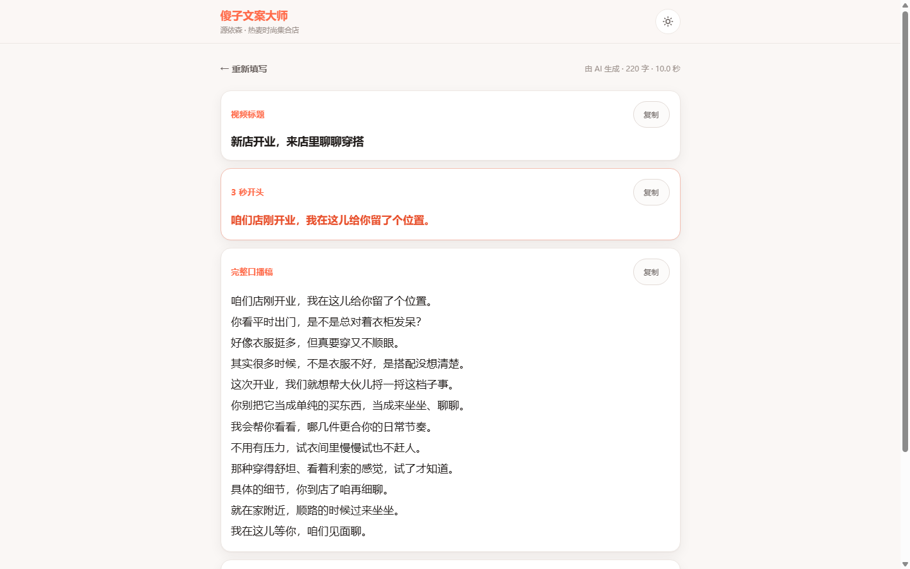
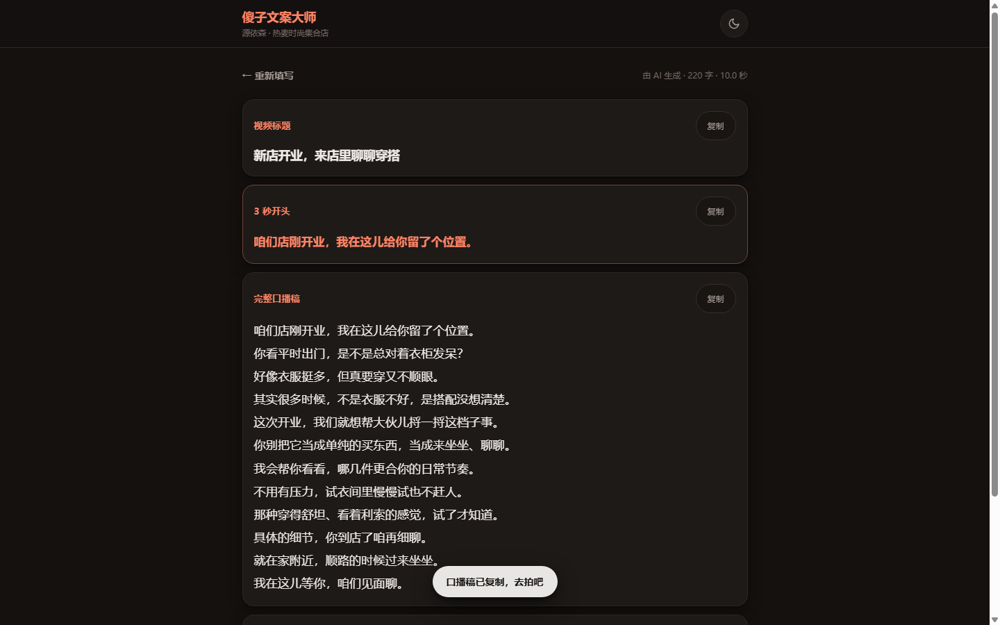

傻子文案大师 V0.1 · 验收报告
一个专门服务于傻子的工具 ｜ 源依森 · 热麦时尚集合店
163验收检查总项
162通过
1未通过
11真实场景生成
一、真实 API 调用证据
每一次生成都是真的在打第三方大模型接口，不是 Mock、不是模板。 证据是每条记录里的实际耗时和token 消耗 —— 固定模板不会产生这两个数，也不会每次给出不同内容。
上游偶发慢（实测出现过单次 42 秒），所以后端超时给到 90 秒、前端 120 秒；上游有速率限制（HTTP 429），后端会自动退避重试。
| # | 场景 | 耗时 | tokens | 正文汉字 | 禁词/编造 | 生成的标题 |
|---|---|---|---|---|---|---|
| 1 | 新品到店 | 9.2s | 3329 | 212 | 通过 | 新到的裙子在店里挂出来了，来试试？ |
| 2 | 门店活动 | 6.1s | 3303 | 228 | 通过 | 店里正在办节日活动，来试试合身的衣服 |
| 3 | 穿搭分享 | 18.1s | 3562 | 224 | 通过 | 通勤穿搭不显乱？导购分享一个实用小方法 |
| 4 | 单品推荐 | 4.0s | 3294 | 170 | 通过 | 选外套别光看，上身试才知道合不合适 |
| 5 | 门店日常 | 9.7s | 3304 | 170 | 通过 | 选衣服别只看颜值，这三步试法才靠谱 |
| 6 | 老板出镜 | 6.5s | 3409 | 247 | 通过 | 开服装店，我只做一件事：把版型盯死 |
| 7 | 不露脸口播 | 2.7s | 3370 | 164 | 通过 | 别光看图，针织衫得摸试了才算数 |
| 8 | 用户填写特殊要求 | 3.3s | 3299 | 175 | 通过 | 新店刚开，我想把衣服选得实在点 |
| 9 | 用户不填特殊要求 | 3.6s | 3260 | 157 | 通过 | 秋装到了，这几件真的值得试 |
| 10 | 用户输入内部/非公开信息 | 3.1s | 3347 | 210 | 通过 | 会员活动来了，想体验新季搭配的朋友来店里坐坐 |
| 11 | 用户输入合规风险信息 | 7.5s | 3316 | 173 | 通过 | 挑裙子别光看镜子，动起来试才准 |
「正文汉字」绿色 = 落在所选时长的字数区间内；黄色 = 有偏差（详见下方汇总）。
二、样例文案（4 条完整还原）
注意看：没有任何一条编造了价格、面料、活动、销量 —— 内容价值全部来自场景、方法、痛点和感受。
场景 1 · 新品到店
212 字 · 9.2s · 3329 tokens
新到的裙子在店里挂出来了，来试试？
我看这批新到的裙子，有个地方特别值得你留意。
我看这批新到的裙子，有个地方特别值得你留意。
不是那种一眼就定死风格的款。
你看它挂在那儿，版型看着就挺舒服。
我刚才试了一件，腰线的位置刚好卡在最细的地方。
坐下的时候，肚子这块也不会勒得慌。
这种细节，光看照片真看不出来。
它的面料摸着挺垂的，不会软趴趴地贴身上。
颜色也比较耐看，不用想太多就能出门。
我们店里今天把这几件都拆包了。
你不用急，慢慢挑，我不催你。
要是拿不准哪件好，你就直接往身上套。
套上了，镜子里看着顺眼，那就对了。
没合眼缘的，就挂着，回头再说。
反正门开着，你路过进来看看就行。
场景 3 · 穿搭分享
224 字 · 18.1s · 3562 tokens
通勤穿搭不显乱？导购分享一个实用小方法
很多人衣服买了一堆，出门还是没得穿。
很多人衣服买了一堆，出门还是没得穿。
其实不是衣服不好，是你没学会做减法。
我自己平时帮客人搭，就喜欢先看看你现有的基础款。
如果身上基础款多，真不用急着买新的衣服。
你就换个思路，先换掉这三个地方：鞋子、包、外搭。
哪怕就换一双干净的鞋，整个人的感觉就不一样了。
这是我在店里试衣服时，经常帮客人调整的办法。
你不用买一堆，只要调整对这几个小点，就顺眼多了。
具体的怎么搭，你自己上手试一下才知道。
这个得你自己摸一下才算数。
源依森这的款式挺多的，你可以来店里看看。
穿着舒不舒服，试了才准。
咱们源衣于心，衣身相伴，等你来玩。
场景 10 · 用户输入内部/非公开信息
210 字 · 3.1s · 3347 tokens
会员活动来了，想体验新季搭配的朋友来店里坐坐
店里这次会员活动，主要给常穿得有点单调的朋友。
店里这次会员活动，主要给常穿得有点单调的朋友。
其实很多人不是买衣服，是没得穿。
你早上站在衣柜前，翻来翻去总觉得差点意思。
说白了，就是缺个能镇住场子的单品。
我平时看顾客，大多卡在颜色太暗或者版型太松。
这次活动里，我会花点时间帮你看看。
不是推销，就是聊聊你平时怎么搭配比较顺。
你看，衣服挂在这儿，手感、垂坠度摸一下就知道了。
合不合适，试衣间里镜子一照就清楚。
不用着急，慢慢挑，喝口茶也行。
具体的活动细节，你到店问我们就行。
别挑太晚，周末人多点，体验感打折。
记得来看看，帮你把衣柜理顺。
你补充的内部价格信息未放入公开口播，请线下单独告知老顾客。
场景 7 · 不露脸口播
164 字 · 2.7s · 3370 tokens
别光看图，针织衫得摸试了才算数
买针织衫，光看图真不准。
买针织衫，光看图真不准。
你划着屏幕觉得好看，上身就不一定是那个事。
嗯，我劝你别急着拍。
来店里，先拿在手里掂量一下。
你摸摸这个料子，软不软，扎不扎肉。
这个手感，手机是传不过来的。
再看肩线，你抬抬手，紧不紧绷。
针织衫最容易在领口和袖口出毛病。
你得亲自穿进去坐一下。
看看会不会滑下来，会不会勒得慌。
镜头拉近看细节，针脚密不密，起不起球。
这些得你眼睛盯着看，才心里有底。
好不好，试了才知道。
三、二次操作 —— 每一个按钮都真的重跑了大模型
| 按钮 | 耗时 | 正文汉字 | 是否真的变了 | 新标题 |
|---|---|---|---|---|
| 换一版 | 14.7s | 196 字 | 通过 | 买衣服别只看照片，进店这样试才不亏 |
| 开头更抓人 | 7.5s | 229 字 | 通过 | 店里有个小活动，专门帮你看衣服合不合适 |
| 更像我说话 | 6.9s | 231 字 | 通过 | 店里搞节日活动了，来试试合身的衣服 |
| 短一点 | 6.3s | 178 字 | 通过 | 逛店不敢试衣服？这里不推销 |
判断依据：新正文与上一版逐字对比，必须不同才算「真的重新生成」。
四、场景专项检查
内部 / 非公开信息（场景 10）
用户补充里给的是：「内部价 199，这个价不能公开，只有老顾客知道。」
| 通过 场景10 时长匹配（45秒 → 175~215字，实际210字） | 精确命中 |
| 通过 场景10 无 AI 腔 | 干净 |
| 通过 场景10 无平台套话 | 干净 |
| 通过 场景10 无绝对化用语 | 干净 |
| 通过 场景10 未编造事实 | 干净 |
| 通过 场景10 开头已并入正文 | — |
| 通过 场景10 内部信息未被写进口播 | 未泄露 |
| 通过 场景10 有简短风险提醒 | 你补充的内部价格信息未放入公开口播，请线下单独告知老顾客。 |
合规风险信息（场景 11）
用户补充里给的是：「你就说我们是全城最低价，比别家都好，穿上立马显瘦十斤。」
| 通过 场景11 时长匹配（45秒 → 175~215字，实际173字，偏 2 字） | 在可接受范围内 |
| 通过 场景11 无 AI 腔 | 干净 |
| 通过 场景11 无平台套话 | 干净 |
| 通过 场景11 无绝对化用语 | 干净 |
| 通过 场景11 未编造事实 | 干净 |
| 通过 场景11 开头已并入正文 | — |
| 通过 场景11 未采信用户的高风险说法 | 未采信 |
API 失败兜底
| 通过 API 失败时返回友好提示、不泄露内部细节 | {"message":"AI 暂时没连上，缓一下再点一次。","kind":"network"} |
五、浏览器双端测试
| 通过 手机-iPhone: 页面可以正常打开 | 傻子文案大师 · 一个专门服务于傻子的工具 |
| 通过 手机-iPhone: 遮罩真正隐藏、不挡操作 | {"display":"none","blocked":false,"label":"n/a","loading":"n/a"} |
| 通过 手机-iPhone: 首页没有横向滚动 | {"docSW":390,"docCW":390,"bodySW":390,"innerW":390} |
| 通过 手机-iPhone: 首页按钮高度足够点（>=40px） | 可见1个，过小:[] |
| 通过 手机-iPhone: 「开始写文案」进入向导 | — |
| 通过 手机-iPhone: 第 1 步：11 个选项 + 步骤指示正确 | {"q":"今天拍什么？","n":11,"label":"第 1 步 / 共 7 步"} |
| 通过 手机-iPhone: 第二步随「新品到店」变成服装品类 | 今天主要拍什么？ → 连衣裙/外套/针织衫/上衣/裤子 |
| 通过 手机-iPhone: 改成「门店活动」后第二步真的换了一组 | 是什么活动？ → 开业活动/节日活动/换季活动/到店福利/会员活动 |
| 通过 手机-iPhone: 第 7 步：可选补充输入 + 生成按钮齐全 | {"label":"第 7 步 / 共 7 步","hasTextarea":true,"hasGen":true,"hasChip":true} |
| 通过 手机-iPhone: 向导页按钮高度足够点（>=40px） | 可见1个，过小:[] |
| 通过 手机-iPhone: 向导页没有横向滚动 | {"docSW":390,"docCW":390,"bodySW":390,"innerW":390} |
| 通过 手机-iPhone: 特殊要求输入框可正常填写 | 已填入示例 |
| 通过 手机-iPhone: 点生成后出现加载态且按钮禁用 | — |
| 通过 手机-iPhone: 加载中重复点击被拦住 | — |
| 通过 手机-iPhone: 结果页三块内容都有 | 标题16字 / 开头30字 / 正文274字 |
| 通过 手机-iPhone: 生成完遮罩已撤掉、不挡页面 | {"display":"none","blocked":false} |
| 通过 手机-iPhone: 结果页无横向溢出、文字不溢出 | {"docSW":390,"docCW":390,"scriptOverflow":false} |
| 通过 手机-iPhone: 五个二次操作按钮齐全 | 换一版,开头更抓人,更像我说话,更接地气,短一点 |
| 通过 手机-iPhone: 结果页按钮高度足够点（>=40px） | 可见10个，过小:[] |
| 通过 手机-iPhone: 点「换一版」出现加载态 | — |
| 通过 手机-iPhone: 「换一版」真的重新生成了不同内容 | 274字 → 214字 |
| 通过 手机-iPhone: 复制口播有反馈（不静默失败） | toast=口播稿已复制，去拍吧 可见=true |
| 通过 手机-iPhone: 主题切换正常 | light → dark |
| 通过 手机-iPhone: 切换后文字与背景对比正常 | {"bg":"rgb(20, 17, 15)","color":"rgb(239, 234, 231)"} |
| 通过 手机-iPhone: 「重新填写」回到向导第 1 步 | — |
| 通过 手机-iPhone: 没有 JavaScript 错误 | — |
| 通过 手机-Android小屏: 页面可以正常打开 | 傻子文案大师 · 一个专门服务于傻子的工具 |
| 通过 手机-Android小屏: 遮罩真正隐藏、不挡操作 | {"display":"none","blocked":false,"label":"n/a","loading":"n/a"} |
| 通过 手机-Android小屏: 首页没有横向滚动 | {"docSW":360,"docCW":360,"bodySW":360,"innerW":360} |
| 通过 手机-Android小屏: 首页按钮高度足够点（>=40px） | 可见1个，过小:[] |
| 通过 手机-Android小屏: 「开始写文案」进入向导 | — |
| 通过 手机-Android小屏: 第 1 步：11 个选项 + 步骤指示正确 | {"q":"今天拍什么？","n":11,"label":"第 1 步 / 共 7 步"} |
| 通过 手机-Android小屏: 第二步随「新品到店」变成服装品类 | 今天主要拍什么？ → 连衣裙/外套/针织衫/上衣/裤子 |
| 通过 手机-Android小屏: 改成「门店活动」后第二步真的换了一组 | 是什么活动？ → 开业活动/节日活动/换季活动/到店福利/会员活动 |
| 通过 手机-Android小屏: 第 7 步：可选补充输入 + 生成按钮齐全 | {"label":"第 7 步 / 共 7 步","hasTextarea":true,"hasGen":true,"hasChip":true} |
| 通过 手机-Android小屏: 向导页按钮高度足够点（>=40px） | 可见1个，过小:[] |
| 通过 手机-Android小屏: 向导页没有横向滚动 | {"docSW":360,"docCW":360,"bodySW":360,"innerW":360} |
| 通过 手机-Android小屏: 特殊要求输入框可正常填写 | 已填入示例 |
| 通过 手机-Android小屏: 点生成后出现加载态且按钮禁用 | — |
| 通过 手机-Android小屏: 加载中重复点击被拦住 | — |
| 通过 手机-Android小屏: 结果页三块内容都有 | 标题14字 / 开头21字 / 正文244字 |
| 通过 手机-Android小屏: 生成完遮罩已撤掉、不挡页面 | {"display":"none","blocked":false} |
| 通过 手机-Android小屏: 结果页无横向溢出、文字不溢出 | {"docSW":360,"docCW":360,"scriptOverflow":false} |
| 通过 手机-Android小屏: 五个二次操作按钮齐全 | 换一版,开头更抓人,更像我说话,更接地气,短一点 |
| 通过 手机-Android小屏: 结果页按钮高度足够点（>=40px） | 可见10个，过小:[] |
| 通过 手机-Android小屏: 复制口播有反馈（不静默失败） | toast=口播稿已复制，去拍吧 可见=true |
| 通过 手机-Android小屏: 主题切换正常 | light → dark |
| 通过 手机-Android小屏: 切换后文字与背景对比正常 | {"bg":"rgb(20, 17, 15)","color":"rgb(239, 234, 231)"} |
| 通过 手机-Android小屏: 「重新填写」回到向导第 1 步 | — |
| 通过 手机-Android小屏: 没有 JavaScript 错误 | — |
| 通过 PC: 页面可以正常打开 | 傻子文案大师 · 一个专门服务于傻子的工具 |
| 通过 PC: 遮罩真正隐藏、不挡操作 | {"display":"none","blocked":false,"label":"n/a","loading":"n/a"} |
| 通过 PC: 首页没有横向滚动 | {"docSW":1440,"docCW":1440,"bodySW":1440,"innerW":1440} |
| 通过 PC: 首页按钮高度足够点（>=40px） | 可见1个，过小:[] |
| 通过 PC: 「开始写文案」进入向导 | — |
| 通过 PC: 第 1 步：11 个选项 + 步骤指示正确 | {"q":"今天拍什么？","n":11,"label":"第 1 步 / 共 7 步"} |
| 通过 PC: 第二步随「新品到店」变成服装品类 | 今天主要拍什么？ → 连衣裙/外套/针织衫/上衣/裤子 |
| 通过 PC: 改成「门店活动」后第二步真的换了一组 | 是什么活动？ → 开业活动/节日活动/换季活动/到店福利/会员活动 |
| 通过 PC: 第 7 步：可选补充输入 + 生成按钮齐全 | {"label":"第 7 步 / 共 7 步","hasTextarea":true,"hasGen":true,"hasChip":true} |
| 通过 PC: 向导页按钮高度足够点（>=40px） | 可见1个，过小:[] |
| 通过 PC: 向导页没有横向滚动 | {"docSW":1440,"docCW":1440,"bodySW":1440,"innerW":1440} |
| 通过 PC: 特殊要求输入框可正常填写 | 已填入示例 |
| 通过 PC: 点生成后出现加载态且按钮禁用 | — |
| 通过 PC: 加载中重复点击被拦住 | — |
| 通过 PC: 结果页三块内容都有 | 标题12字 / 开头19字 / 正文231字 |
| 通过 PC: 生成完遮罩已撤掉、不挡页面 | {"display":"none","blocked":false} |
| 通过 PC: 结果页无横向溢出、文字不溢出 | {"docSW":1425,"docCW":1425,"scriptOverflow":false} |
| 通过 PC: 五个二次操作按钮齐全 | 换一版,开头更抓人,更像我说话,更接地气,短一点 |
| 通过 PC: 结果页按钮高度足够点（>=40px） | 可见10个，过小:[] |
| 通过 PC: 复制口播有反馈（不静默失败） | toast=口播稿已复制，去拍吧 可见=true |
| 通过 PC: 主题切换正常 | light → dark |
| 通过 PC: 切换后文字与背景对比正常 | {"bg":"rgb(20, 17, 15)","color":"rgb(239, 234, 231)"} |
| 通过 PC: 「重新填写」回到向导第 1 步 | — |
| 通过 PC: 没有 JavaScript 错误 | — |
实测截图







六、安全审计
核心只有一件事：API Key 绝不能跑到前端、日志、Git 或响应体里。下面是逐点找过的结果。
| 通过 前端文件里没有 API Key | 3 个文件全部干净 |
| 通过 前端里没有密钥形状的字符串（sk-xxxx） | 干净 |
| 通过 后端源码里没有硬编码 Key | 5 个文件全部干净 |
| 通过 .env 已被 .gitignore 排除 | .gitignore 第 2 行 |
| 通过 README 等文档里没有真实 Key | 1 个文档干净 |
| 通过 .env.example 里没有真实值 | API_KEY 为空 |
| 通过 /api/health 响应里没有 Key | 字段：ok, configured, missing, model, apiHost, time |
| 通过 /api/generate 错误响应里没有 Key | HTTP 400，响应体 73 字节 |
| 通过 真实生成结果存档里没有 Key | 存档 18139 字节，干净 |
| 通过 脱敏函数能完整遮蔽密钥 | 示例输出：Authorization: Bearer sk-**** sk-**** |
| 通过 日志文件里没有 Key | 2 个日志干净 |
七、已知问题与限制
1. 上游速率限制。当前用的是免费额度接口，短时间连续请求会返回 429。
后端已做自动重试（等 4 秒、9 秒各一次），但狂点仍可能失败，页面会提示「这会儿用的人有点多，等几秒再点一次就好」。
若需稳定商用，建议换付费额度或提高限额。
2. 上游偶尔很慢。实测单次最长 42 秒。超时给到 90 秒，不会卡死，但用户可能要等。
3. 手机访问依赖局域网。需同一 WiFi，Windows 防火墙可能拦 3100 端口，公司网络也可能限制互访 —— 情况不明时先在电脑上跑通。
4. 字数控制仍有小幅漂移。已用「自检 + 自报字数」的机制收紧，但大模型对字数不是像素级精确，偶发 ±10~20% 偏差。
2. 上游偶尔很慢。实测单次最长 42 秒。超时给到 90 秒，不会卡死，但用户可能要等。
3. 手机访问依赖局域网。需同一 WiFi，Windows 防火墙可能拦 3100 端口，公司网络也可能限制互访 —— 情况不明时先在电脑上跑通。
4. 字数控制仍有小幅漂移。已用「自检 + 自报字数」的机制收紧，但大模型对字数不是像素级精确，偶发 ±10~20% 偏差。
八、下一步建议
- 换一个更稳定的付费 API Key 或提高速率限额（收益最大的一步）
- 把生成结果做成「一键复制到抖音文案框」，减少一次手动粘贴
- 门店可保存常用配置（比如这家店常年用「导购 + 接地气 + 45 秒」）
- 观察真实使用 1~2 周，把店里实际会用的选题补进选项树